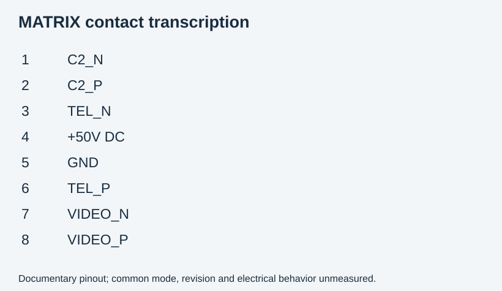

Authored report · Source / retained evidence in private GitHub repository ↗
MATRIX port: user-supplied pinout
Received 2026-10-11. Source is the image titled Orqa IRONghost Matrix Port Pinout, supplied by the user. Its publisher, revision and applicability to the particular bench radio have not been independently checked. Treat the table as documentary evidence, not a measurement.

| RJ45 contact, as numbered in image | Function | Documented signal |
|---|---|---|
| 1 | C2_N | C2 uplink negative, differential 3.3 V peak-to-peak |
| 2 | C2_P | C2 uplink positive, differential 3.3 V peak-to-peak |
| 3 | TEL_N | Telemetry downlink negative, differential 3.3 V peak-to-peak |
| 4 | +50 V DC | Enabled/disabled by radio on/off control at TAC startup |
| 5 | GND | Ground |
| 6 | TEL_P | Telemetry downlink positive, differential 3.3 V peak-to-peak |
| 7 | VIDEO_N | CVBS video negative |
| 8 | VIDEO_P | CVBS video positive |
The note specifies differential UART, 115k, full duplex, with 100 ohms between positive and negative at the receiving end of the cable. The nominal rate agrees with the controller firmware's UART configuration of 115200 baud. The image does not establish receiver common-mode range, isolation, maximum allowable voltage, exact line-driver standard or measured behavior. It is insufficient to label the interface definitively RS-422 or RS-485.
For later capture, C2 contacts 1/2 form one stream and telemetry contacts 3/6 form another. The offline decoder keeps these streams separate. Electrical capture will need suitable differential receivers or measurement equipment; the laptop Ethernet port and a direct single-ended USB-TTL input do not implement this documented interface. Power and video contacts must be excluded from the data receiver wiring. Connector orientation must follow the source drawing; MCU logical GPIO numbering is unrelated to RJ45 contact numbering.
The 100-ohm note describes receiving-end termination. It is not an instruction to add another terminator across an already terminated operating link. Actual topology/loading will need to be established when designing the capture connection.
This image supersedes the earlier statement that no connector pinout was available. The remaining gap is revision applicability and electrical verification, not absence of a documented contact map. No hardware connections, termination changes, power changes or measurements were performed when recording it.
Evidence: structured transcription and SHA-256.